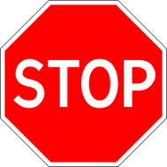

15. Движение через железнодорожные пути
изменения от 8 апреля 2020
15.1. Водители транспортных средств могут пересекать железнодорожные пути только по железнодорожным переездам, уступая дорогу поезду (локомотиву, дрезине).
15.2. При подъезде к железнодорожному переезду водитель обязан руководствоваться требованиями дорожных знаков, светофоров, разметки, положением шлагбаума и указаниями дежурного по переезду и убедиться в отсутствии приближающегося поезда (локомотива, дрезины).
15.3. Запрещается выезжать на переезд:
· при закрытом или начинающем закрываться шлагбауме (независимо от сигнала светофора);
· при запрещающем сигнале светофора (независимо от положения и наличия шлагбаума);
· при запрещающем сигнале дежурного по переезду (дежурный обращен к водителю грудью или спиной с поднятым над головой жезлом, красным фонарем или флажком, либо с вытянутыми в сторону руками);
· если за переездом образовался затор, который вынудит водителя остановиться на переезде;
· если к переезду в пределах видимости приближается поезд (локомотив, дрезина)
Кроме того, запрещается:
· объезжать с выездом на полосу встречного движения стоящие перед переездом транспортные средства;
· самовольно открывать шлагбаум;
· провозить через переезд в нетранспортном положении сельскохозяйственные, дорожные, строительные и другие машины и механизмы;
· без разрешения начальника дистанции пути железной дороги движение тихоходных машин, скорость которых менее 8 км/ч, а также тракторных саней-волокуш.
15.4. В случаях, когда движение через переезд запрещено, водитель должен остановиться у стоп-линии, знака 2.5 или светофора, если их нет - не ближе 5 м от шлагбаума, а при отсутствии последнего - не ближе 10 м до ближайшего рельса.

Знак 2.5
15.5. При вынужденной остановке на переезде водитель должен немедленно высадить людей и принять меры для освобождения переезда. Одновременно водитель должен:
· при имеющейся возможности послать двух человек вдоль путей в обе стороны от переезда на 1000 м (если одного, то в сторону худшей видимости пути), объяснив им правила подачи сигнала остановки машинисту приближающегося поезда;
· оставаться возле транспортного средства и подавать сигналы общей тревоги;
· при появлении поезда бежать ему навстречу, подавая сигнал остановки.
· Примечание. Сигналом остановки служит круговое движение руки (днем с лоскутом яркой материи или каким-либо хорошо видимым предметом, ночью - с факелом или фонарем). Сигналом общей тревоги служат серии из одного длинного и трех коротких звуковых сигналов.